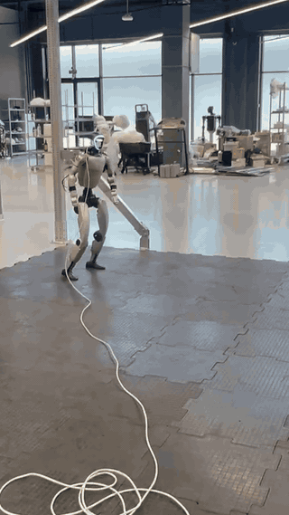
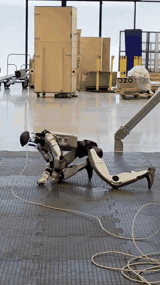
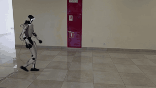
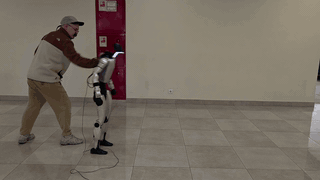
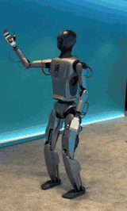
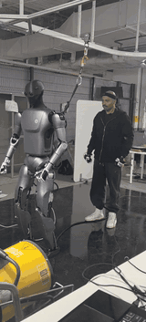
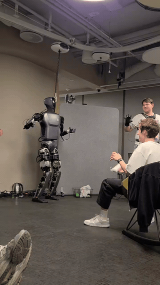
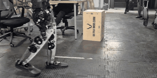
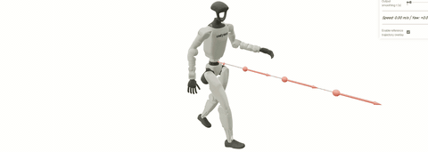
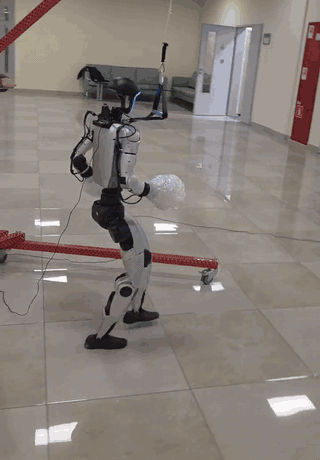

Researcher & Senior RL Engineer Robotics Whole-Body Control Humanoid Locomotion
I build control for articulated robots — from novel actuators to legged locomotion, reinforcement learning, whole-body control, and sim-to-real deployment. Currently exploring generative motion (diffusion, score matching) for natural, command-conditioned humanoid motion.
M.Sc. — Korea University of Technology and Education · STANKIN
simkaned@gmail.com · simeon-ned.github.io · GitHub · Google Scholar
Humanoid RL & WBC · industry + research · sim-to-real on real hardware
| 2026–now |
Senior RL Engineer · MIPT Humanoid RL, WBC, generative motion research |
| 2023–2025 |
Senior RL Engineer · Sber Robotics Green humanoid — predictor-based locomotion, WBC, teleop, actuator sys ID, sim-to-real (AIJ 2025) |
| 2022–now |
Senior Lecturer · Innopolis University Robotics, nonlinear control, simulation |
| 2019–2023 |
Researcher · Innopolis University Novel actuators, adaptive control, hardware prototyping |
| 2017–2019 |
Research Assistant · BioRobotics Lab, Korea Mechanical design, embedded control, robot prototyping |
~9 yrs robotics · ~4–5 yrs RL/DL · 3+ yrs locomotion & WBC in production & research
Whole Body Control in MuJoCo Lab


One shared MDP → train once, deploy one policy for many whole-body skills.
Modular mjlab stack — shared MDP in env/, registered robot entities, presets that compose tasks without forking core code. Multi-clip motion tracking with BeyondMimic / ZEST / SONIC-style task presets.
--task on one CLI & log layoutregister_wbc_extensionpolicy.onnx + config.yaml for deploy runtimespolicy.onnx + config.yaml deploy export · open-source frameworkPredictive Style Matching for Natural Locomotion


Predictive Style Matching — natural gait without imitation fragility on Unitree G1 (sim & hardware).
Task-only RL transfers and recovers well, but gaits stay stiff; clip tracking looks better yet references oppose balance — ~5× more falls under pushes. Frozen predictor fφ maps lower-body history + commands to state-conditioned upper-body & gait targets; rewards at train time only — deployed πθ keeps vanilla proprioceptive obs.
RL Locomotion & Whole-Body Control




Core senior engineer — RL locomotion & WBC on Green humanoid (AIJ 2025).
Predictor-based human-like locomotion; unified WBC for teleoperation, dance, and zero-shot skills; synthetic refs & retargeting; motor & actuator system identification for simulation fidelity.
Command-Conditioned Locomotion Generation


Command-conditioned full-body locomotion — online in sim, validated on G1.
Learned motion matching + flow matching; stand / walk / run transitions via interactive control.
Batched Differential IK on MuJoCo Warp
GPU-parallel IK on MuJoCo Warp — author, PyPI package.
Mink-shaped API for batched task-space IK: closed chains, hard limits via GPU ADMM, CUDA graphs for real-time loops.
Dynamics · system ID · differential IK · retargeting · GPU-accelerated control
EqualityConstraintTask for closed chains
Why this work · what I bring · where I'd take it next
The synergy of interesting problems that are practical and research-worthy at once — pushing what robots can execute, from agile locomotion and whole-body motion to generative motion planning beyond fixed gaits, with research and production moving together.
Industry + research on learning-based control. At Sber Robotics: core senior RL engineering — predictor-based locomotion, WBC, actuator sys ID, MuJoCo pipelines to deployable policies. Research & teaching: WBC and generative motion planning.
Happy to discuss humanoid RL, WBC, and sim-to-real for your team.
simkaned@gmail.com · Telegram · simeon-ned.github.io
Questions?